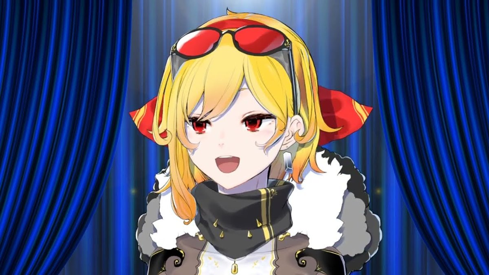
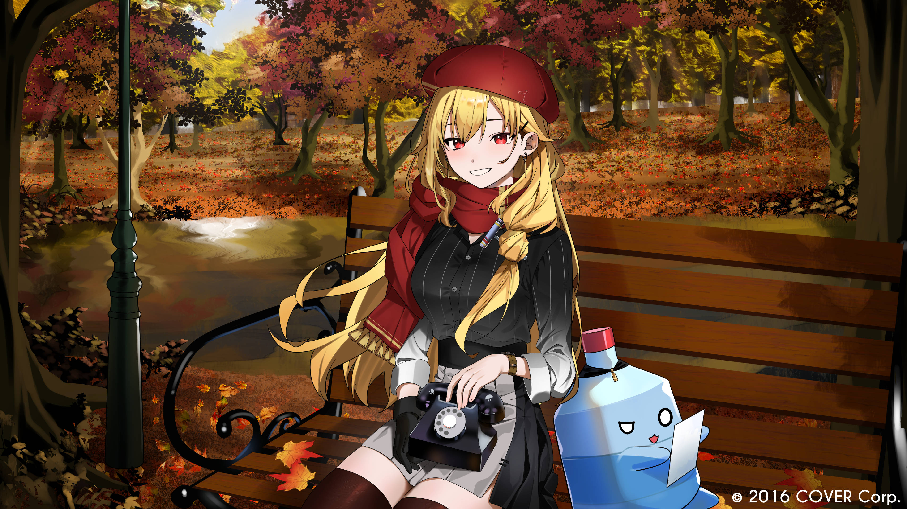
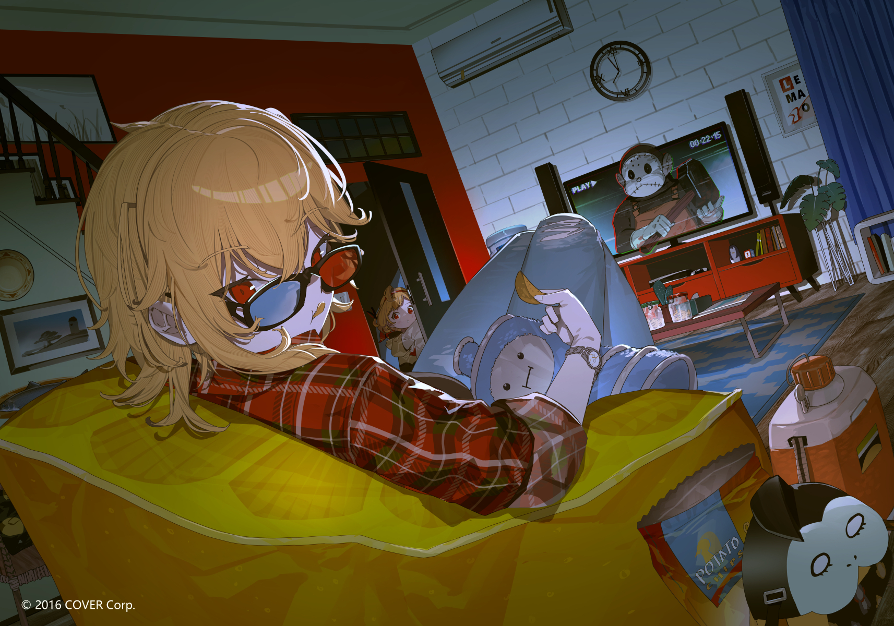
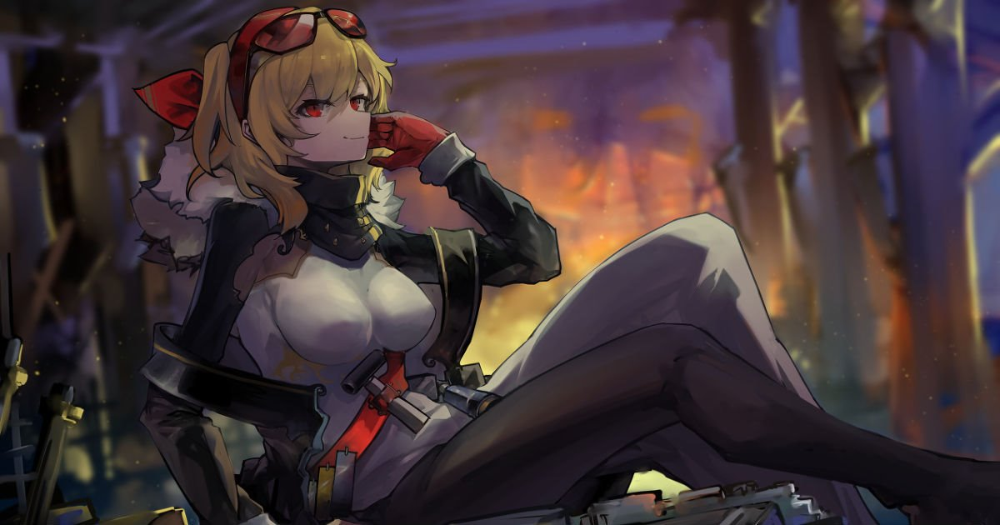
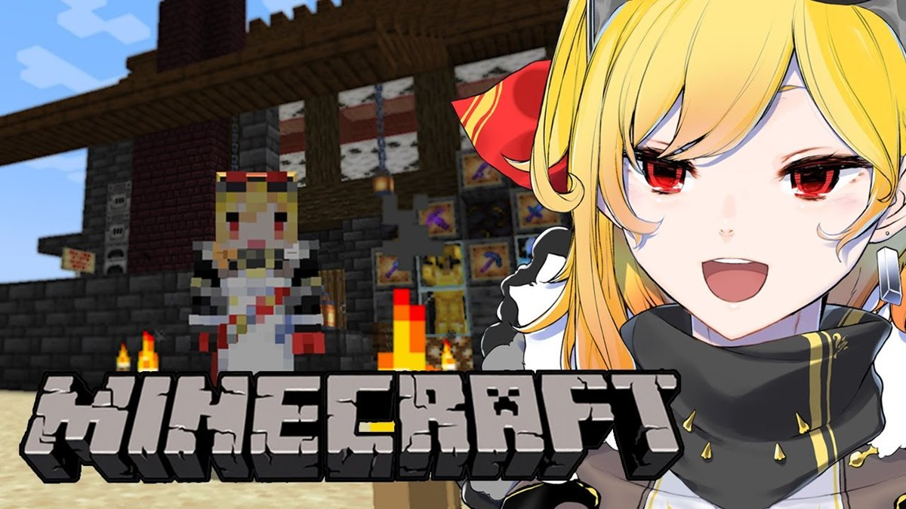
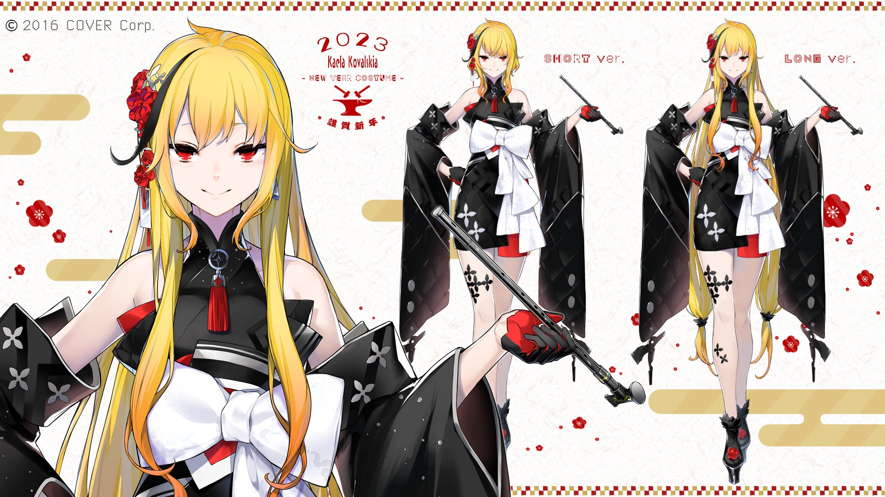
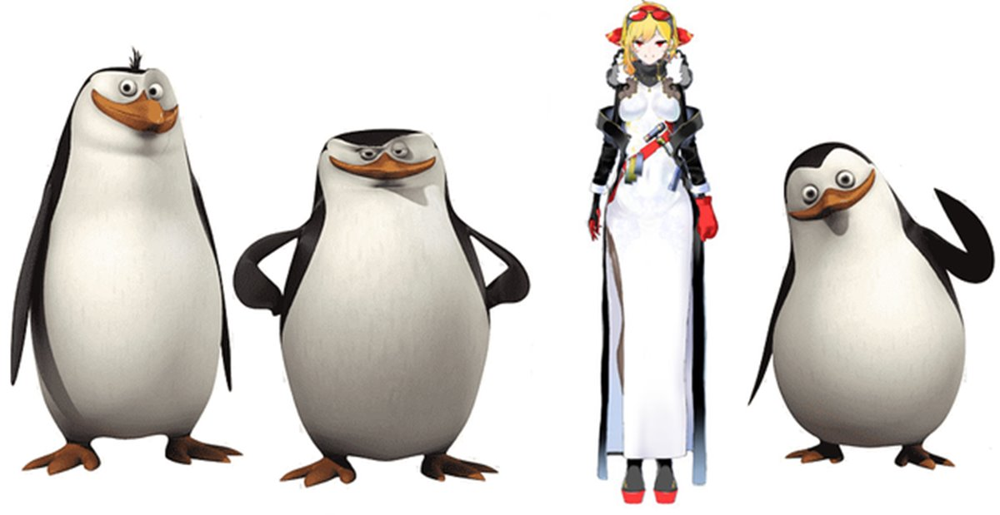
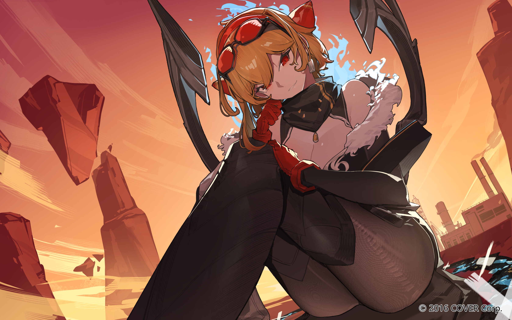
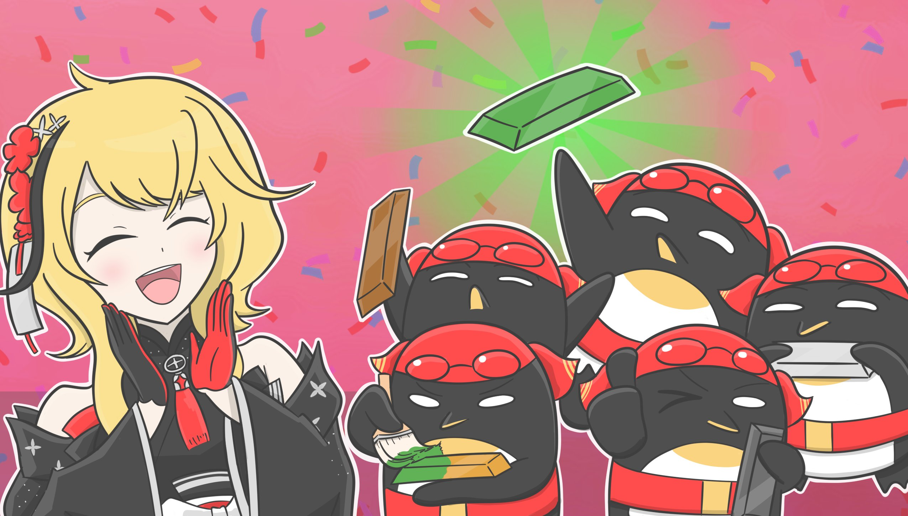
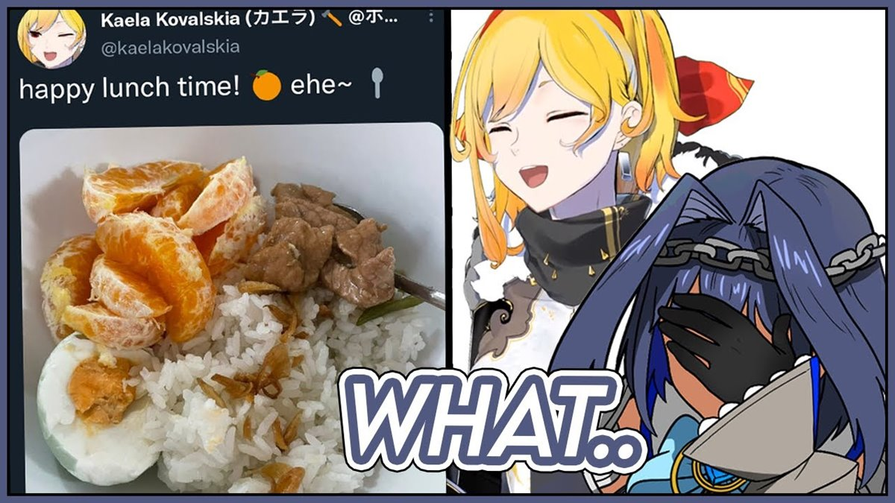

Profile

After taking over her great blacksmithing teacher's forge, she felt
a lack of excitement in her life. So, she decided to be free and
depart on a journey to find rare smithing materials, one of which
was rumored to be under the building of a certain "idol group" in
town. She also loves challenging herself and has a peculiar taste
when it comes to foods
Kaela's skin is particularly white. She has medium-length blonde
hair with a red headband and red sunglasses. Her eyes are a bright
red. Her left earring is a metal ingot. Her main piece of cloth is a
long dress with a black back and a white front face and a fat grey
neckband. The dress slightly exposes her armpits under transparent
surfaces, and her right left through an opening. Over the dress, she
wears a long black jacket with a fluffy hood, falling on her arms.
Her left glove is full red and ample, while right one is black with
red fingers. She also wears thighs and black high heels with red
sole. Around her waist, she has a red belt holding her small hammer
and three different metal ingots.
Personality

Kaela appears to be a pretty calm person. She barely raises the
voice even when she becomes angry. Kaela is known for her particular
laugh, as she always laughs silently. She likes flirting a little
with her chat as well and other VTubers like Vestia Zeta. Kaela also
likes to tease other people. Despite admiring Ouro Kronii more than
any one else within hololive, Kaela likes to compete with her at any
opportunity. On the other hand, when people send back her
compliments and kindness by telling her she is cute, Kaela stalls in
a deny.
Kaela is an obsessional video game player. Among all hololive
members, she stands on top for the longest average stream time.
Frequently, she extends her gaming streams in order to do her
favorite activity, which she calls "grinding". Most of her
colleagues have learned after some time to acknowledge Kaela as a
frightening worker when it comes to farming and getting experience
on certain video games, which led to them regularly calling her as
an impromptu gaming collab partner, even if it is just for emotional
support. Despite these numerous requests, Kaela is always patient
and happy to help, with patience being one of her strongest
qualities. Following Moona's lessons on Minecraft, Kaela's
dedication and experience earned her a strong reputation in all
hololive. Thus, many Japanese members started calling her a god.
She exhibits many personalities, with one of the most popular being
a little sister personality called "Ckia", taking a cute high
pitched. Her next personality, Skia, sounds like an older sister and
is supposed to be more skilled than Kaela, having a slightly deeper
voice and a more audible laugh.[9] Sometimes, Kaela can also adopt
an old lady voice to become the one named "Grandmaela". She calls
herself "Goriela" when she starts imitating gorilla noises, or even
"Omela" while taking a deep male voice.
Like Anya Melfissa, Kaela is very resistant to horror situations and
never appears to be frightened. Additionally, her reaction to most
horror scenarios (such as jump scares) has drawn comparisons to
Shishiro Botan, where they laughed at situations that would
otherwise scare their colleagues. For this reason, some of her
colleagues called her as emotional support during their horror game
streams, the most notable example being Hakos Baelz and Ceres Fauna
on their The Mortuary Assistant stream.
Kaela shows sometimes a seductive side towards other hololive
members. She likes to invite them all becoming her "wives," as if
she was grinding for a harem. This behavior led her being nicknamed
"Elagator."
Fun Fact
Here are some fun facts about this third generation VTuber from
Hololive ID. Don't miss important information about interesting
facts about Kaela Kovalskia below.
The meaning of the name Kaela Kovalskia

Kovalskia itself comes from the Polish word Kowalski or Kowalska
which means 'blacksmith'. However, similar names to this name are
generally often used by families living in other areas of eastern
Europe. Meanwhile, the name Kaela itself probably comes from a
play on the word 'Leak', an evil Indonesian mythical creature who
is the mortal enemy of the Barong. Because the name Kaela or Kaera
is a name that is rarely used as a girl's name in Japan. Even his
clothing designs are inspired by the Barong, a mythical creature
from Bali.
Background to Kaela Kovalskia's Story

Reportedly after taking over the blacksmith's workshop from her
great teacher, Kaela Kovalskia felt a lack of joy in her life.
Because he felt dissatisfied, he finally decided to travel to find
rare materials that would help him blacksmith. One of these
materials is rumored to be under the building of a certain 'idol
group' in the city. This search and journey took him to Hololive
headquarters where he was then recruited to become a member there.
Even though he is now a member of Hololive, his search is not
finished.
VTubers who enjoy streaming for a long time

If you usually find VTubers who only stream 2 hours, 3 hours, up
to 5 hours, Kaela has her own reputation among fans. Kaela has a
reputation for streaming high frequency and long duration. Even
Kaela can spend a lot of time on her regular streams when other
people spend it on long streams. This experience is often found
when fans watch Kaela streaming at night before going to bed, and
when they wake up Kaela is still streaming. The VTuber who reached
100,000 subscribers before his debut has streamed various games
for a very long time, such as 12 hours of streaming Minecraft
games, 11 hours of playing Rust, 9 hours of playing Overwatch, and
many more. So if Kaela says Short Stream ends up not being 'Short'
anymore, guys.
Character Created by Manga Illustrator Durarara!!

VTuber Kaela Kovalskia's character designer's name is Yasuda
Suzuhito. He is known as the illustrator of the manga Durarara!!
and Is It Wrong to Try to Pick Up Girls in a Dungeon? both of
which have been adapted into anime. Apart from being the 'mama'
who created the character Kaela Kovalskia, she is also known to be
the character designer for Suntory Nomu. Virtual YouTuber
character who is a means of marketing consumer drinks from the
large company Suntory.
Origin of the Penguin Name

Kaela has the nickname Penguin which comes from her fans. This is
because his appearance, wearing a white one piece shirt, is
similar to a penguin. Even though the design of the clothes is
inspired by the mythical creature from Bali, namely the Barong.
Apart from that, another reason it is called a penguin is because
of Kaela Kovalskia's name, namely Kovalskia, which is similar to
the name 'Kowalski', which is the name of a penguin from the
Madagascar series.
League of Legends fans

Kaela Kovalskia is a fan of the League of Legends franchise,
because she is known to have played various versions of the League
of Legends game. Starting from the PC version of the game, League
of Legends Wild Rift (mobile), to the Teamfight Tactics game
League of Legends which has the best multiplayer PvP auto battler
gameplay from the studio behind League of Legends.
His laughter was inaudible

Kaela is synonymous with her silent laugh, so every time she
laughs in her stream, she will appear to be just opening her mouth
without a sound of laughter coming out. This probably happened
because of the noise suppression effect of his streaming
application so it couldn't capture the sound of his laughter. So
when you laugh you won't be able to hear the sound of the laugh.
Have strange tastes in food

Another interesting fact about Kaela Kovalskia is that she has
strange and unusual tastes in food. Kaela likes bitter melon
juice, rice with manga, and other processed foods that use bitter
melon that most people don't usually like.